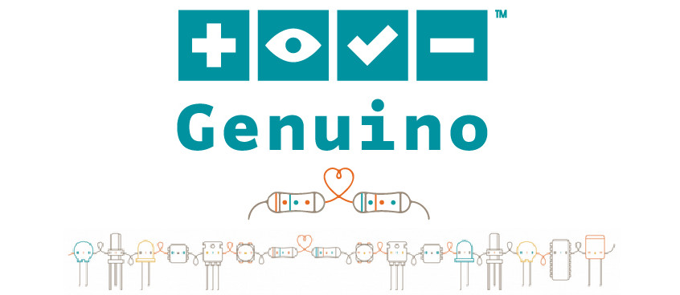

|
|
||||||
Genuino is Arduino.cc’s sister-brand created by Arduino co-founders Massimo Banzi, David Cuartielles, Tom Igoe, and David Mellis, the Arduino.cc team and community. This brand is used for boards and products sold outside the US. The Genuino brand certifies the authenticity of boards and products in line with the philosophy of open-hardware and open-source that has always characterized the values of Arduino. Genuino makes the Arduino open-source project available worldwide through alliances with local market-leading manufacturers in Asia, Europe, South America, Canada and Africa.  |
||||||
| |
||||||